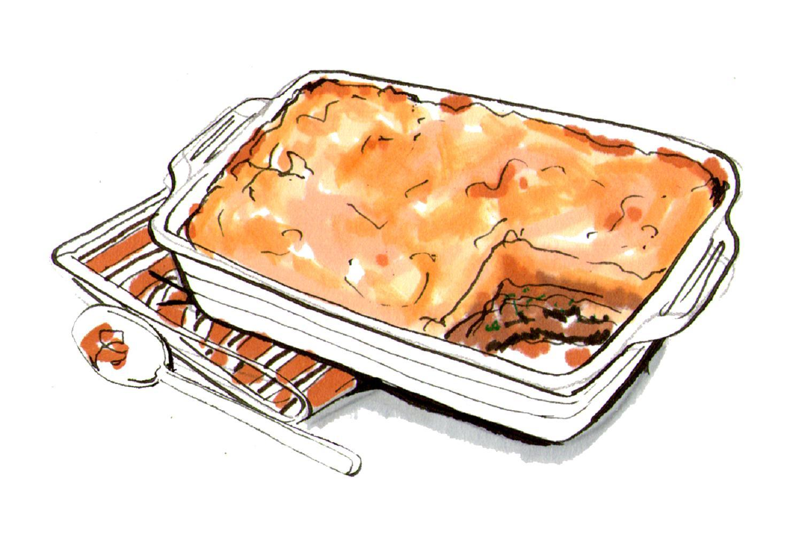

Shepherd pie recipe

Ingredients needed:
- Ground meat
- Mashed Potatoes
- Vegetables
Steps:
- Cook the ground meat with vegetables and seasonings
- Prepare mashed potatoes with butter and milk
- Layer the meat mixture in a dish and top with mashed potatoes.
Bake until golden.